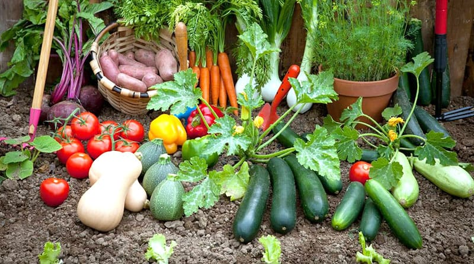

"Harvesting Health, One Veggie at a Time!"
100% Organic,"Discover the finest, farm-fresh vegetables delivered straight to your door.
ABOUT US
At Fresh Veggies, we believe in the power of wholesome, organic produce to nurture both body and soul. Our journey began with a simple mission: to bring the freshest, highest-quality vegetables from our local farm directly to your table. We are passionate about sustainable farming practices and are committed to providing pesticide-free, nutrient-rich vegetables that you and your family can trust. Our team of dedicated farmers works tirelessly to ensure that every vegetable is harvested at its peak, delivering unmatched freshness and flavor. Join us in our mission to promote healthier living through fresh, organic produce. Taste the difference that true quality makes, and let us be your trusted source for all your vegetable needs.
VARIETIES
Tomato
Tomatoes are juicy and packed with flavor, making them a versatile addition to any meal. Rich in vitamins A and C, they are also a great source of antioxidants that help boost your immune system and promote healthy skin.
Potato
Potatoes are a staple in many diets around the world. They are an excellent source of carbohydrates, providing energy, and are rich in potassium, vitamin C, and vitamin B6, making them nutritious as well as filling.
Cauli Flower
Cauliflower is a cruciferous vegetable known for its mild flavor and versatility. It's low in calories but high in fiber, vitamins C and K, and antioxidants. It's a great choice for those looking to maintain a healthy diet.
Ladie's Finger
Ladies finger, or okra, is known for its unique texture and subtle flavor. It's rich in vitamins C and K, and adds a delightful crunch to stir-fries, stews, and curries.

Pumpkin
Pumpkins are more than just a fall favorite. They are loaded with vitamin A, which is essential for eye health, and are also high in fiber, which aids in digestion. Their sweet, nutty flavor makes them perfect for both savory and sweet dishes.
Onion
Onions add a flavorful punch to a variety of dishes. They are rich in vitamins C and B6, and contain antioxidants and compounds that fight inflammation, reduce cholesterol levels, and promote heart health.
OUR SERVICE

Fresh
We deliver fresh Vegetables with a 100% guarantee of freshness.

Fast
We deliver your orders as fast as possible, delivery procedure begins as soon as vegetables is plucked from tree.

Satisfying
We guarantee 100% customer satisfaction.